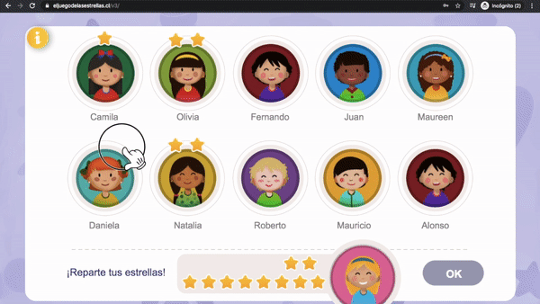
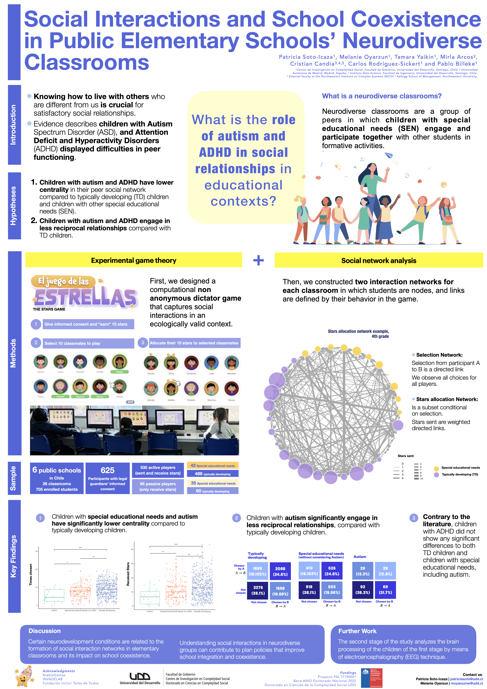

{kind=link}
A bilingual, more visual version of the paper with an explorable network and the main results in narrative form.
Preview here >>
If the preview does not load, open the story in a new tab.
Abstract
During childhood, schools are crucial environments for social interactions, making them ideal for evaluating the inclusion of students with special educational needs (SEN). In particular, autistic children often face challenges in peer relationships, yet the impact of autism on social dynamics in schools is not well understood. To address this issue, we examined social dynamics within elementary schools using a novel ecological approach based on experimental game theory to quantify social integration and reciprocity among autistic children.
Social networks were constructed for each classroom based on the children’s peer selections during a distributive game played on a user-friendly tablet interface. Six elementary schools took part in this study, comprising 625 students aged 6–11. Among them, 464 were students without SEN, 143 were students with SEN excluding autism, and 18 were autistic students.
Our analysis showed that autistic children and children with SEN were significantly less central and less involved in reciprocal peer relationships compared to children without SEN. These findings highlight the need for support in promoting social inclusion while also emphasizing the importance of exploring the intersection of neurodevelopmental conditions and social dynamics.
How the study works
Step 1 — The game: El juego de las estrellas
Most studies of peer relationships rely on asking children to name their friends. The problem is that children don’t always say what they actually do — especially when it comes to who they include or exclude. We took a different approach: rather than asking, we observed.
Each child played a short game on a tablet at their school desk. Everyone in the class participated at the same time, and crucially, everyone knew who was playing — so choices had real social weight.

The Stars Game running on classroom tablets in real time.

A) Each child first picks up to 10 classmates they want to play with. B) Then distributes 15 stars among their chosen classmates — the more stars sent to someone, the stronger the social preference.
Step 2 — Mapping who connects with whom
From each child’s choices, we built a social network map of the classroom — essentially a diagram showing who gives attention and resources to whom. Two types of connection were recorded:

Example classroom network from the study. Each dot is a child: teal = autistic (ASD), orange = other special educational needs (SEN), purple = no SEN. Larger dots received more stars; thicker lines mean more stars were sent. Autistic children (teal) are visibly smaller and sit closer to the edges.
Step 3 — Does the game measure what it should?
Before drawing conclusions, we checked whether the game was actually picking up real social dynamics — or just random behavior. We compared each child’s game score against traditional peer surveys where children separately rated who they’d like to spend time with, who they avoid, and who they consider a friend.

How many stars a child received in the game correlates strongly with how many peers nominated them as a friend (R = 0.65–0.76), and negatively with how many peers said they would avoid them (R = −0.42 to −0.49). The game is measuring the same thing as traditional friendship surveys.
Children who received more stars in the game (higher in-strength centrality) were consistently the ones that classmates named as friends in the survey — and those who received few stars were more likely to be named as someone peers avoid. The behavioral measure tracks real social dynamics.
Key findings
Finding 1 — Autistic children are more peripheral in classroom networks
The most basic question is: how often do classmates choose to include an autistic child? We measured this in two ways — how many peers selected them, regardless of stars (in-degree), and how many stars they received in total (in-strength). Both are measures of social centrality and both tell the same story.

How often each group was chosen — in-degree (left) — and how many stars they received — in-strength (right) — both expressed as standardized scores (z-scores) relative to the class average. A score of 0 means average; negative scores mean below average. Autistic children (teal) cluster well below zero on both measures.
Autistic children scored approximately 0.5–0.7 standard deviations (z-scores) below the class average on both measures — a meaningful gap that was statistically significant (p = 0.0025 and p = 0.0026 compared to children without SEN). In practical terms: in a typical classroom, an autistic child is likely to be chosen by fewer peers, and to receive fewer stars, than most of their classmates.
Children with other special educational needs also scored below average, but the gap was smaller and less consistent. The effect was most pronounced for autism.
Finding 2 — The stars autistic children receive come from fewer peers
Beyond how many stars a child receives, we also looked at how spread out those stars are across the class — a measure of concentration known as the Gini coefficient. A child with diverse social connections tends to receive small amounts from many peers; a child in a more fragile position receives their few stars concentrated from just one or two.

The Gini coefficient (0 = stars spread evenly across all peers; 1 = all stars from one person) measures how concentrated a child’s received stars are — lower means broader social support. Autistic children show a statistically significant reduction of approximately 0.04 points (β = −0.039, p = 0.036), meaning their limited social support tends to come from a narrower circle of classmates.
While 0.04 Gini points is modest in absolute terms, it reflects a consistent pattern: autistic children not only receive fewer stars overall, but what they do receive is less distributed across peers — a sign of a more isolated social position.
Finding 3 — Autistic children’s relationships are rarely mutual
A close friendship is usually mutual — you include someone, and they include you back. We measured how often this happened for each group through a property called reciprocity: a relationship counts as reciprocal when child A chose child B and B also chose A.

Each table shows how often pairs were mutually chosen (top-right cell) vs. not. For typically developing children, 24.3% of all possible ties were mutual. For autistic children, only 12.8% — roughly half the rate.
This is arguably the starkest finding: autistic children’s relationships were about half as likely to be mutual compared to their typically developing peers (12.8% vs. 24.3%). When an autistic child chose a classmate, that classmate often did not choose them back. The result is not just fewer connections, but connections that tend to go in one direction — a pattern that makes meaningful friendship harder to form and sustain.
A surprising null result: ADHD
One group that prior literature often associates with social difficulties is children with ADHD. Contrary to that expectation, we found no significant differences in centrality or reciprocity between children with ADHD and typically developing children. This suggests that the social network effects we observed are specific to autism — not a general feature of all neurodevelopmental conditions — and motivates more targeted research and support strategies.
Conference poster

Keywords
Social networks · Autism spectrum disorder · Neurodevelopmental disorders · Inclusive education · Experimental game theory